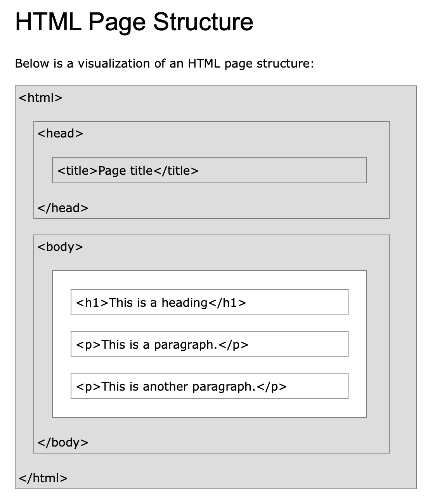

HTML의 장점
- 쉽다.
- 웹 페이지를 만든는 언어이다.
웹 = 퍼블릭 도메인(누구나 만들 수 있고 누구나 사용할 수 있다.)
웹 = 퍼블릭 도메인(누구나 만들 수 있고 누구나 사용할 수 있다.)
최신 IDE(통합 개발 환경)를 사용 하신다면, 기본적으로 인코딩 방식은 UTF-8로 설정이 되어 있을 것입니다. 하지만 Windows 운영체제는 기본 인코딩 값으로 여전히 euc-kr방식을 사용하기 때문에, 이 페이지가 UTF-8 방식으로 인코딩 되었음을 알려야 합니다.
HTML5의 경우 다음 코드를 <head>태그 안에 삽입하여 페이지 언어셋이 utf-8임을 브라우저에 알립니다. (기본) <meta charset="utf-8"> XHTML의 경우 다음 코드를 <head> 태그 안에 삽입하면 됩니다. <meta http-equiv="Content-Type" content="text /html; charset=utf-8" />
The <strong> tag is used to define text with strong importance. The content inside is typically displayed in bold
tip:
Use the <b> tag to specify bold text without any extra importance!
<strong></strong>
<u>text<u>
h1~h6 크기 순으로 구별한다.
제목처럼 보이는 일반 글과 실제로 제목으로 코딩 되어있는 글은 검색측면에서 질적으로 매우 다르다. (같은 글을 검색해도 제목으로 코딩된 글이 먼저 검색엔진에 올라옴.)
The <h1> to <h6> tags are used to define HTML headings. <h1> defines the most important heading. <h6> defines the least important heading. Note: Only use one <h1> per page - this should represent the main heading/subject for the whole page. Also, do not skip heading levels - start with <h1>, then use <h2>, and so on.
The HTML <p> element defines a paragraph. A paragraph always starts on a new line, and browsers automatically add some white space (a margin) before and after a paragraph.
->여백의 자유도가 떨어지지만 css를 통해 보완할 수 있음.
The HTML <br> element defines a line break. Use <br> if you want a line break (a new line) without starting a new paragraph:
Images are not techncally inserted into a web page; images are linked to web pages, The <img> tag creates a holding space for the referenced images.
The <img> tag has two required attributes;
<img src="img_girl.jpg" alt="Girl in a jacket" width="500" height="600">
<ul> 부모 태그(unordered list) <--> <ol> 자동으로 순번을 매겨줌(ordered list)
<li> 자식 태그(list)

-> 페이지와 페이지를 연결하는 실과 본드같은 기
<a href="url"></a>
The target attribute specifies where to open the linked document.
The target attribute can have one of the following values:
링크를 통해서 결합되어 있는 웹페이지의 그룹을 웹사이트라 한다.
상대 경로 URL은 두 개의 문서 파일이 root 디렉터리 하나를 공유하고 있을 때만 유효합니다. 대부분 웹사이트가 서버상에서 r∞t 디렉터리를 공유합니다. 그러므로 같은 웹사이트에서는 상대 경로를 사용해서 링크를 부여하는 것이 편리할 경우가 많습니다.
상대 경로 링크는 몇 가지 규칙에 따라 생성합니다.
만일 같은 디렉터리 내에 있는 파일로 링크를 제공하면 단순히 목적지 파일 이름을 작성하는 것으로 상대 경로 URL을 완성할 수 있습니다. 예를 들어. index.html과 contact.html이 같은 폴더 내에 있고 index.html어써 contact.html로 링크를 제공한다면 다음과 같이 작성합니다.
<a href ='contact.html'>Contact us</a>
만일 링크하고자 하는 파일이 링크를 제공하는 파일과 같은 디렉터리에 있는 또 다른 디렉터리 안에 있다면 목적지 파일이 있는 디렉터리 이름을 명시하고 슬래시를 추가한 다음 최종목적지 파일을 작성하는 것으로 상대경로 URL을 완성할 수 있습니다.
<a href ='details/contact.html'>Contact us</a>
웹사이트 만들어보기 실습 소스(index.html) <!doctype html> <html> <head> <title>WEB1-html</title> <meta charset = "utf-8"> </head> <body> <h1><a href="https://kr.mancity.com " target = "-_blank" title = "맨체스터 시티 공식 홈페이지">Manchester City</a></h1> <!--head--> <ol> <li><a href="manchester.html">Manchester City</a></li> <li><a href="html.html" >HTML</a></li> <li><a href="css.html" >CSS</a></li> <li><a href="javascript.html" >JavaScript </a></li> </ol> <p><strong>영국 잉글랜드 <a href="https://kr.mancity.com" target="_blank" title="맨시티 홈페이지"><u>프리미어 리그</u></a> 소속 프로 축구 클럽.</strong> 연고지는 맨체스터. 홈 구장은 에티하드 스타디움. 맨체스터의 이름을 가진 축구 팀은 그레이터맨체스터 주 안에 무수히 있지만 개중 그레이터맨체스터 주의 중심도시인 맨체스터 시를 연고로 하는 유일한 1부 리그 팀이라는 것이 특징이다. 맨체스터 유나이티드 FC는 그레이터 맨체스터 주의 트래포드(Trafford)가 연고지이고 볼턴 원더러스 FC, 위건 애슬레틱 FC는 그레이터 맨체스터 주의 볼턴과 위건에 속해있다. 1880년 세인트 마크스라는 이름으로 창단하여 1887년 아드윅 AFC로 바꿨다가 1894년에 맨체스터 시티로 처음 시작하게 되었다. 구단주는 아랍 에미리트의 셰이크 만수르 빈 자예드 알 나얀이다. 법적으로는 그가 소유하고 있는 아부다비 유나이티드 그룹(ADUG)이 시티 풋볼 그룹의 대주주가 되고 시티 풋볼 그룹과 그 회장인 칼둔 알 무바라크가 그를 대신하여 구단을 지배하는 형태로 이루어져 있으나, 만수르가 투자청을 세운 이유는 맨시티를 인수하기 위해서이고 그 예하의 시티 풋볼 그룹은 맨시티 인수 이후 전 세계의 다른 구단들(뉴욕 시티 FC, 멜버른 시티 FC 등)과 함께 지배하기 위해서 생겨난 경영 구조일 뿐이므로 최종 결재권자는 여전히 만수르이다. </p> <img src="mancity.jpg" width="100%"> <p style="margin-top:45px;">방패를 포함해서 역대 엠블럼에 공통적으로 (또는 몇 군데에서만) 들어가는 상징들은 모두 본래 맨체스터 시의 상징들에서 따온 것이다. 각각을 비교해보면 쉽게 알 수 있다. 방패는 맨체스터라는 도시의 발생 계기가 고대 로마 시절 요새로 만들어진 것이기 때문에 도시가 지형적으로 방어 능력이 뛰어났던 것을 의미한다. 방패 안에서 윗부분에 있는 것은 배(船)로 맨체스터가 교역도시임을 상징하며 배 아래에 물결치는 것은 맨체스터에 있는 운하를 의미한다. 지역 라이벌 클럽인 맨체스터 유나이티드 FC 로고에서도 비슷한 이유로 물 위에 떠다니는 배를 찾을 수 있다. </p> </body> </html>
인터넷(영어: Internet, 문화어: 인터네트)은 컴퓨터로 연결하여 TCP/IP(Transmission Control Protocol/Internet Protocol)라는 통신 프로토콜을 이용해 정보를 주고받는 컴퓨터 네트워크이다.
인터넷의 유래는 1960~1970년대 미국 국방부 산하의 고등 연구국(Advanced Research Projects Agency, ARPA)의 연구용 네트워크가 시초이며, 군사용 네트워크는 밀네트(MILNET)로 발전되었다. 동서냉전이 한창이던 때 미국 국방부 고등계획국에서는 핵전쟁 등의 상황에서도 살아남을 수 있는 네트워크를 연구하였다. 연구결과 기존의 회선 교환(circuit switching)방식보다는 패킷 교환(packet switching)방식이 매우 견고하고 생존성이 높았다. 최초의 2 노드간의 상호연결은 1969년 10월 29일 UCLA와 SRI연구소간에 연결되었다.[6] 이 통신망을 ARPANET이라고 하였으며 현재의 인터넷망의 시초이다.
월드 와이드 웹(World Wide Web, WWW, W3)은 인터넷에 연결된 컴퓨터를 통해 사람들이 정보를 공유할 수 있는 전 세계적인 정보 공간을 말한다. 간단히 웹(Web)이라 부르는 경우가 많다. 이 용어는 인터넷과 동의어로 쓰이는 경우가 많으나 엄격히 말해 서로 다른 개념이다. 웹은 전자 메일과 같이 인터넷 상에서 동작하는 하나의 서비스일 뿐이다. 그러나 1993년 이래로 웹은 인터넷 구조의 절대적 위치를 차지하고 있다.
웹 브라우저는 index.html 파일의 코드를 읽어서 화면에 표시.
github를 통해 서버를 빌려 호스팅하는 방법.
/Applications/mampstack-7.4.10-0 (bitnami wamp 경로)
Bitnami mysql 비밀번호: 비밀0628